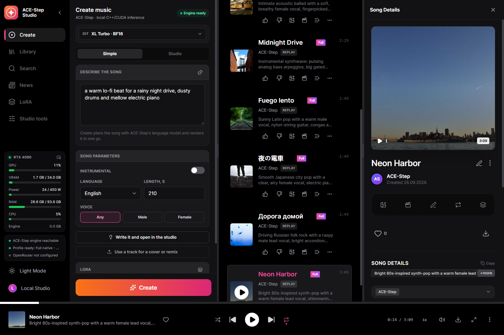
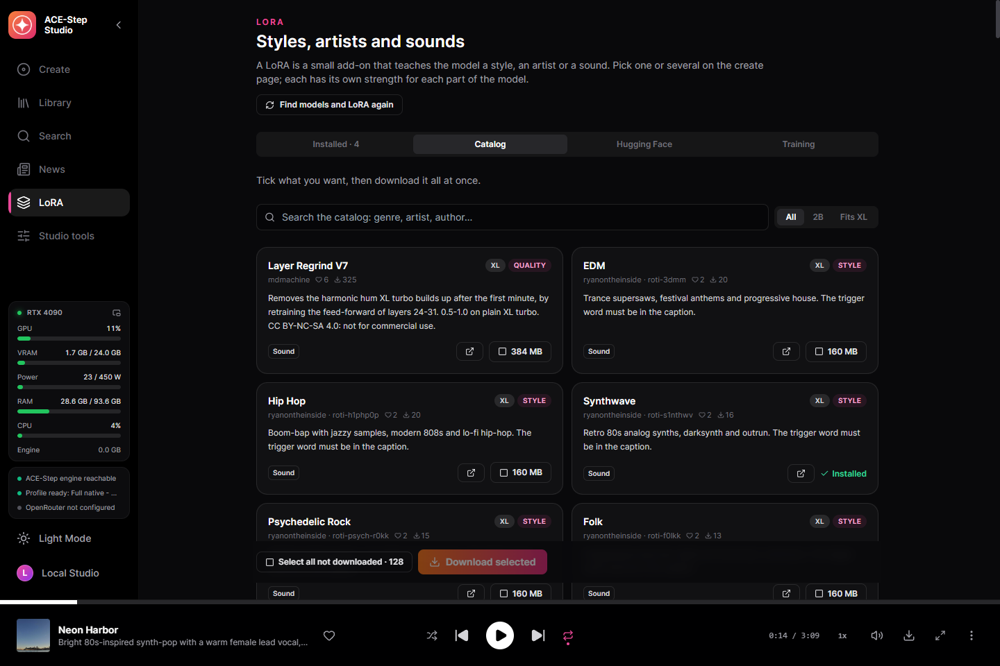
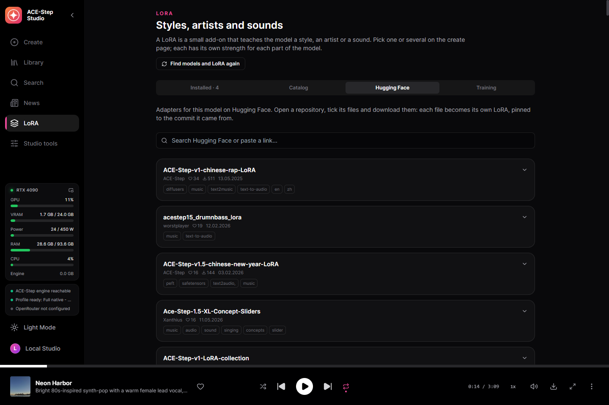
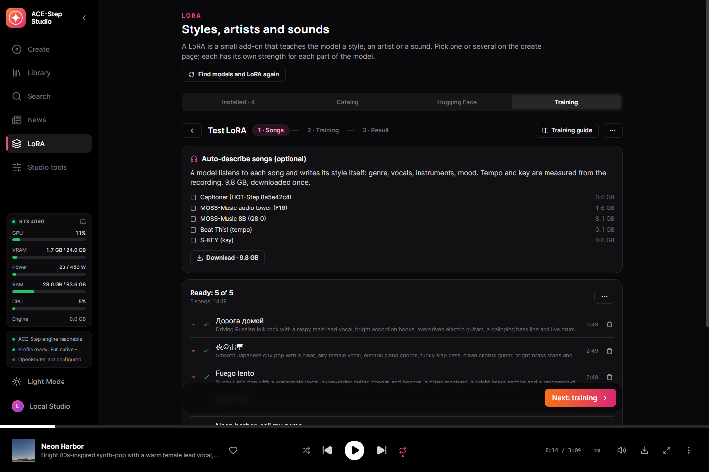
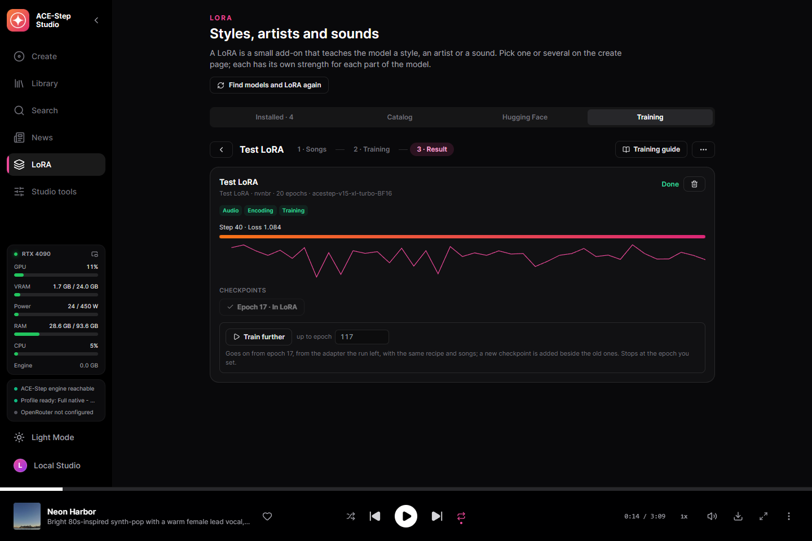
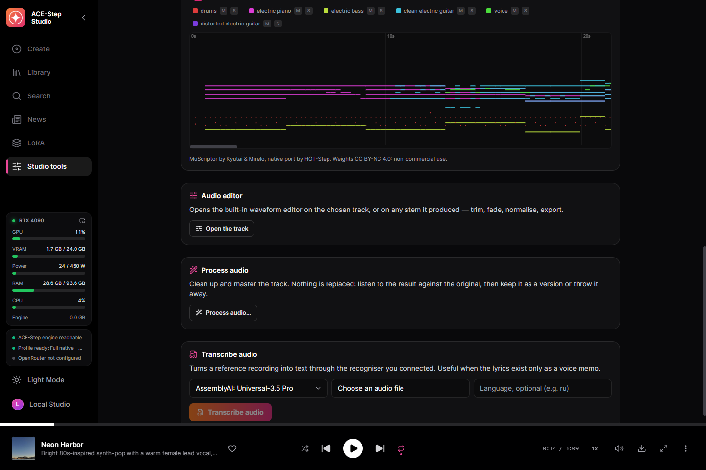
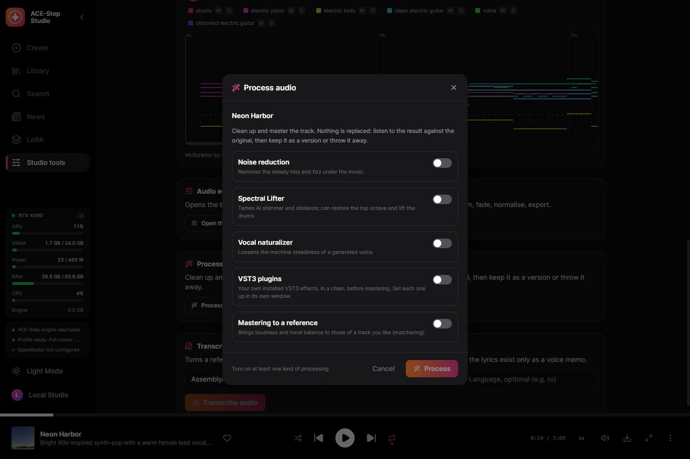
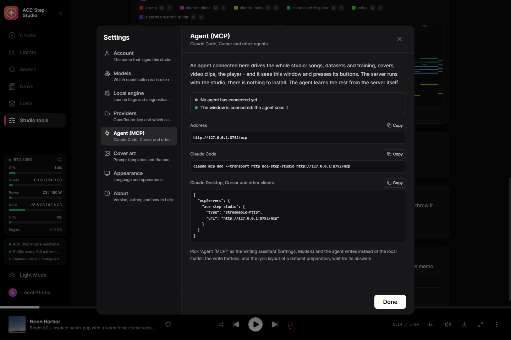
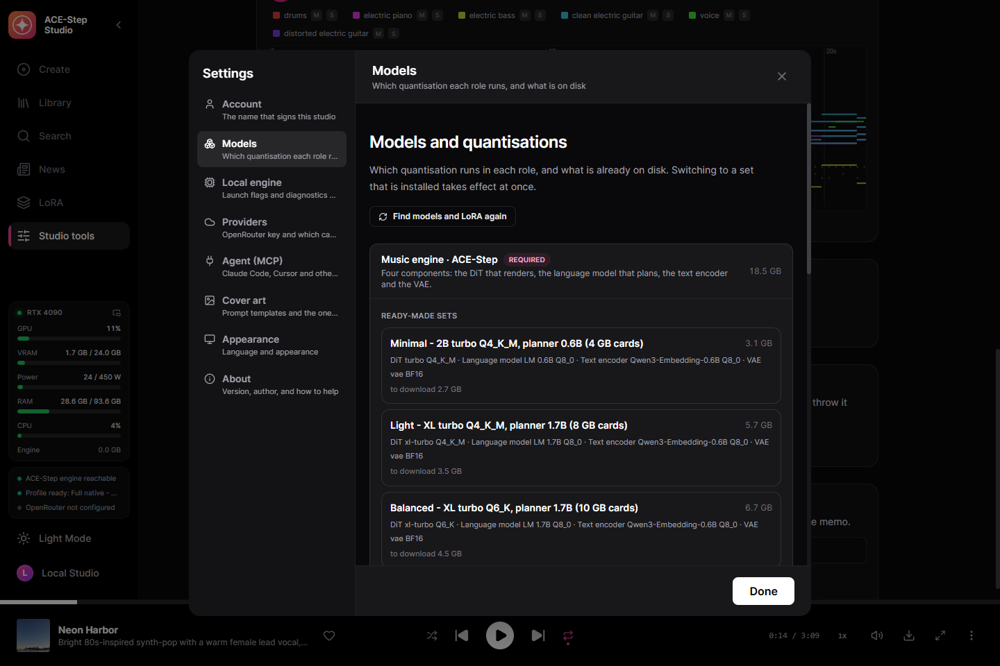

Full songs with vocals, on your own GPU
A desktop studio for ACE-Step 1.5, the open music model that writes and sings full songs. Describe the sound and write lyrics — or give it one line — and it plans the song with its language model and renders it with vocals on your own card. One executable on the native C++ engine acestep.cpp — no Python, no launcher.
Windows 10/11 x64 and an NVIDIA GPU with 4 GB of VRAM or more (GTX 900 or newer). The models are downloaded from inside the studio when you decide to.
What it does
Everything below runs on your machine unless you connect a cloud key yourself.
Full songs
Up to ten minutes from a caption and lyrics. ACE-Step's planner fills in what you leave out — tempo, key, length, even the lyrics — and plans the structure before the DiT renders it.
A song from one line
The simple form: an idea in, a finished song out. The writing assistant or ACE-Step's planner writes it, never both at once.
Every ACE-Step model
The 2B and XL DiT — turbo, SFT, base, merges, community fine-tunes — in Q4 to BF16, switched above the create form. Planners of 0.6B, 1.7B and 4B.
Covers, remixes, repaints
Render a library track in a new style, remix it, repaint a stretch of it, or extract, add and complete stems with a base model.
Exact replay
Every track keeps its request and audio codes: re-render it bit for bit, or with other steps, a new seed, several takes.
200 ready examples
ACE-Step's own example requests, one click to load.
A writing assistant
A local Gemma, OpenRouter or your agent writes the caption and lyrics from an idea by ACE-Step's official songwriting rules.
A LoRA catalogue
131 LoRA picked from Hugging Face by likes and downloads, described and credited, and a search of everything Hugging Face has — every file checked for the model size it fits before it downloads.
Your own LoRA
Songs of one artist or style become a LoRA on your card with HOT-Step's trainer and its LoKR recipe. Every setting is editable, and each checkpoint goes to the LoRA library in one click.
A dataset in one drop
Drop a folder: the lyrics come word for word from the databases players use, Whisper hears only what none of them knows, MOSS-Music listens to every song and describes it. A restart picks the work up where it stopped.
Word-level karaoke
Enhanced LRC with a timestamp on every word, aligned by Parakeet or Whisper.
Stems and MIDI
Six stems with HT-Demucs; any track to multi-instrument MIDI with MuScriptor, with a piano roll played against the original.
Audio processing
Noise reduction, the Spectral Lifter, a vocal naturaliser, your own VST3 plugins and mastering to a reference.
Driven by your agent (MCP)
Connect Claude Code, Claude Desktop or Cursor and the agent does everything the studio does — 163 tools — and sees and works its window. ACE-Step's writing rules come with it, so the agent writes the songs itself.
Songs made with it
Rendered on a clean install of the released build, as the studio saved them.
Screenshots
The studio itself, in this language.









Models
A runnable set is the DiT, the planner, the text encoder and the VAE, all in GGUF.
| Your GPU | Set | Download |
|---|---|---|
| 24 GB | Full native — XL turbo BF16, planner 4B BF16 | 19.9 GB |
| 13 GB+ | Quality — XL turbo Q8_0, planner 4B Q8_0 (recommended) | 10.9 GB |
| 10 GB+ | Balanced — XL turbo Q6_K, planner 1.7B | 7.2 GB |
| 8 GB+ | Light — XL turbo Q4_K_M, planner 1.7B | 6.1 GB |
| 4 GB+ | Minimal — 2B turbo Q4_K_M, planner 0.6B | 3.3 GB |
The studio preselects the set your card can run, but the download is always your decision. Every file is checked by SHA-256 against a pinned Hugging Face revision, and an interrupted download resumes.
Getting started
- Install — run the installer, or unpack the portable archive anywhere.
- Choose a set — the first screen preselects what your card can run; it downloads only what is missing.
- Write — a caption and lyrics, an example, or one line in the simple form.
- Create — the engine starts by itself and the song lands in your library.
What runs where
Local by default. A cloud key is added by you, for the capability you choose.
| Part | Runs | Size |
|---|---|---|
| ACE-Step engine (acestep.cpp) | Your GPU: CUDA, Vulkan or the processor | bundled |
| ACE-Step model set | Your GPU | 3.3–19.9 GB |
| NVIDIA cuBLAS | NVIDIA cards only | 391 MB, once |
| Karaoke timings — Parakeet or Whisper | Your machine | optional |
| Stem separation — HT-Demucs | Your GPU or CPU | optional |
| Writing assistant | Local Gemma or OpenRouter | optional |
| LoRA trainer — HOT-Step ace-train | An NVIDIA RTX card | 0.1 GB + the BF16 DiT, optional |
| Describing songs by ear — MOSS-Music-8B | about 12 GB of VRAM | 9.8 GB, optional |
| Audio to MIDI — MuScriptor (HOT-Step ace-midi) | NVIDIA GTX 16 / RTX 20 or newer | 0.5–5.6 GB, optional |
| VST3 host — HOT-Step | Your machine, a process of its own | bundled |
How it is built
The service is compiled into the desktop binary and supervises the C++ engine. Finished songs are imported by the service itself, so a result survives a reload or a closed window.
React UI ─┐
├─ ACE-Step-Studio.exe (Tauri window + Rust/Axum service)
Rust axum ┘ │
└─ acestep.cpp `ace-server` (C++/GGML, GGUF)
Privacy
Your music is yours, and it stays on your disk.
No account
There is nothing to sign up for.
No telemetry
The studio does not report what you generate.
Cloud is opt-in
Nothing leaves the machine until you add a key, and then only for that capability.
Who made this
Nerual Dreming — artist, founder of ArtGeneration.me and the Neuro-Cartel community, author of YuE2 Studio and MiniMax Music3 Studio, the same studio for other music models.